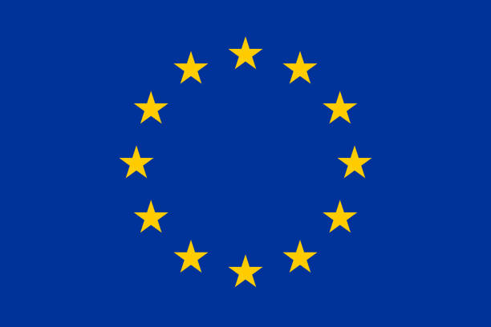

ERASMUS+ je najveći program Europske unije za obrazovanje, osposobljavanje, mlade i sport. Obuhvaća sve europske i međunarodne programe i inicijative Europske unije u području obrazovanja (opće obrazovanje, visoko obrazovanje, obrazovanje odraslih), osposobljavanja (stručno obrazovanje i osposobljavanje), mladih i sporta. Program Erasmus+ nudi financijsku podršku studentima TVZ-a za studiranje jednog semestra tijekom njihovih studija na partnerskim visokoškolskim ustanovama unutar Europske unije ili financijsku podršku za stručnu praksu u tvrtki unutar Europske unije u trajanju od dva do šest mjeseci. Natječaj za Erasmus+ mobilnost obično se objavljuje dva puta godišnje – na početku svakog semestra.
